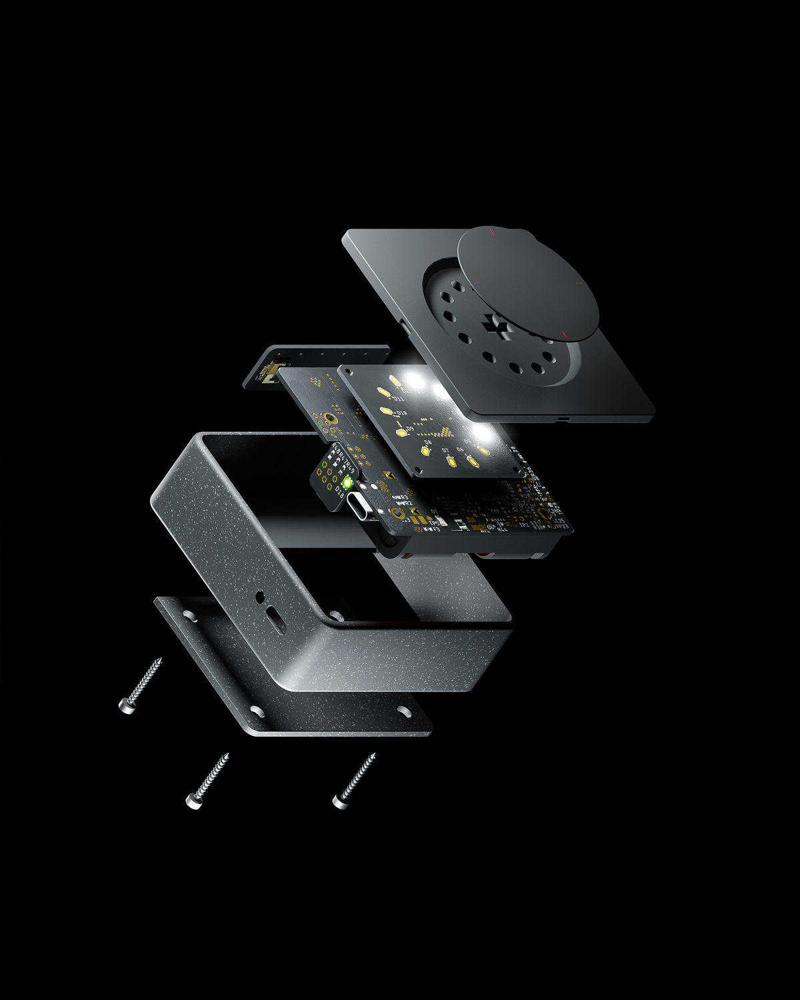
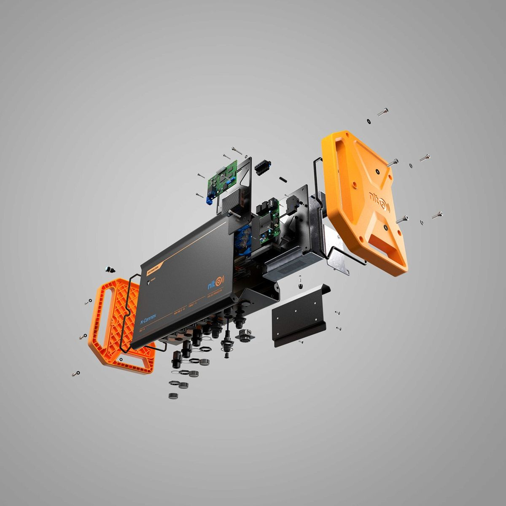
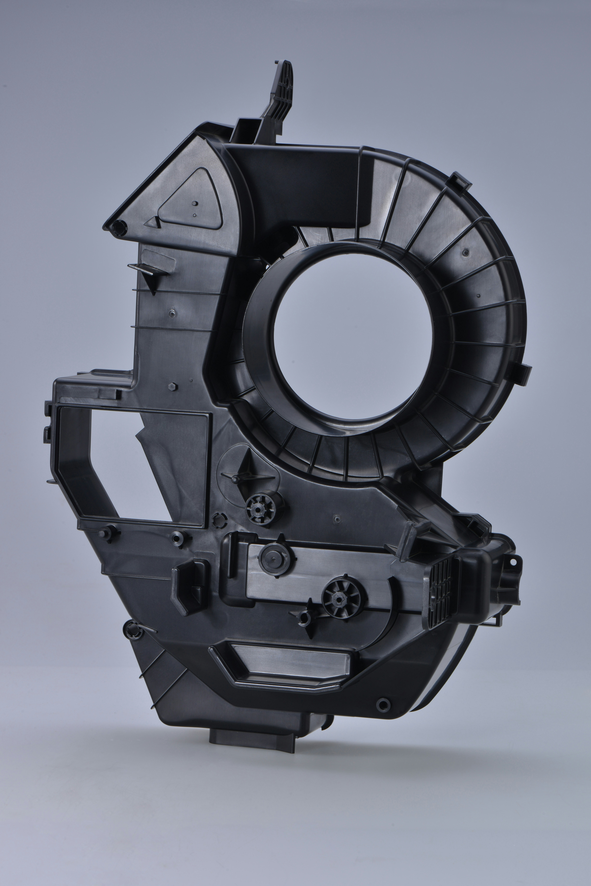

Pesquisa e viabilidade
Investigação de tecnologias, alternativas de solução, restrições, experimentos iniciais e critérios para decidir se — e como — o conceito deve avançar.
Pesquisa aplicada · trade-offs · prova de princípioTransformamos desafios tecnológicos em protótipos integrados, reunindo pesquisa, arquitetura, hardware, mecânica, firmware, software e testes em um único fluxo de desenvolvimento.

Antes de investir em produto, ferramental ou escala, o protótipo permite testar princípios, interfaces, riscos e decisões de arquitetura. Ele transforma uma hipótese em evidência observável.
Por isso, nosso trabalho pode começar na pesquisa e na viabilidade, avançar por subsistemas e chegar a um demonstrador funcional completo — com o nível de fidelidade adequado à pergunta que o projeto precisa responder.
Atuação modular ou integrada, conforme a maturidade, os riscos e as capacidades já existentes na equipe do cliente.
Investigação de tecnologias, alternativas de solução, restrições, experimentos iniciais e critérios para decidir se — e como — o conceito deve avançar.
Pesquisa aplicada · trade-offs · prova de princípioRequisitos, arquitetura, decomposição em subsistemas, interfaces e decisões técnicas organizadas em torno da função que o conjunto precisa cumprir.
Requisitos · arquitetura · interfacesArquitetura eletrônica, seleção e integração de componentes, sensores, atuadores, alimentação, processamento e comunicação conforme o escopo.
Eletrônica · sensores · conectividadeDrivers, aquisição de dados, lógica de controle, comunicação, interfaces e aplicações necessárias para transformar componentes em comportamento funcional.
Embarcados · controle · aplicaçõesModelagem CAD 3D, mecanismos, gabinetes, suportes, interfaces, ergonomia técnica e preparação da geometria para prototipagem e fabricação.
CAD · integração física · fabricabilidadeMontagem dos subsistemas, bring-up, diagnóstico, ensaios funcionais, registro de resultados e ciclos de correção orientados pelos critérios do projeto.
Integração · testes · evidências
Uma placa isolada, uma carcaça ou um algoritmo podem funcionar individualmente e ainda assim falhar como produto. O protótipo integrado torna visíveis as interfaces entre energia, sinais, dados, software, montagem, dissipação, uso e manutenção.
Quando pertinente, o projeto pode ser organizado com referências de maturidade tecnológica, como TRL, para explicitar o que já foi demonstrado e o que ainda precisa ser validado.
Problema, aplicação, hipótese e valor esperado.
Princípio crítico demonstrado em cenário controlado.
Funções prioritárias reunidas para aprendizado técnico.
Subsistemas integrados com maior fidelidade de uso.
Pacote técnico e preparação para a próxima fase.
A rota é dimensionada caso a caso. Nem todo projeto precisa percorrer todas as etapas, e a menção a TRL funciona como referência de planejamento — não como certificação automática de maturidade.
Um bom protótipo não tenta reproduzir tudo desde o início. Ele concentra recursos nos riscos e hipóteses que precisam ser resolvidos naquele estágio.
Valida um princípio, tecnologia ou função crítica com a menor configuração capaz de produzir evidência.
Combina funções prioritárias para testar desempenho, comportamento, interação e decisões de arquitetura.
Integra hardware, mecânica e software em configuração representativa para verificação mais rigorosa.
Comunica a capacidade do sistema a usuários, parceiros e decisores em um cenário relevante.
O desenvolvimento físico considera interfaces, fixações, acesso, volume, proteção e processo de fabricação. Modelos CAD e peças prototipadas ajudam a verificar montagem, ergonomia técnica e compatibilidade antes de escolhas mais caras ou difíceis de reverter.

O processo combina investigação e engenharia. Cada ciclo produz entregáveis e evidências que orientam a decisão seguinte.
Contexto, pesquisa, tecnologias disponíveis, hipóteses, riscos e critérios de sucesso.
Requisitos, alternativas, subsistemas, interfaces e plano de desenvolvimento.
Modelos, hardware, mecânica, firmware e software na fidelidade necessária.
Bring-up, testes funcionais, diagnóstico, correções e consolidação de evidências.
Documentação, pacote técnico, próximos riscos e preparação para piloto ou nova iteração.
O pacote é composto conforme o escopo e pode apoiar decisão de investimento, demonstração, continuidade interna, contratação de fornecedores ou preparação para industrialização.
Hipóteses, referências, riscos, trade-offs e recomendações técnicas.
Funções, subsistemas, interfaces e decisões de projeto registradas.
Modelos, desenhos, esquemas, listas, código e registros previstos no escopo.
Configuração física e lógica construída para os objetivos de validação acordados.
Critérios, procedimentos, resultados, limitações e pontos para evolução.
Revisões, riscos remanescentes e orientação para piloto, fornecedores ou fabricação.
A Sirius Dynamics Technology é uma empresa incubada no Tecpar, no Paraná. Esse contexto reforça a orientação da empresa para pesquisa aplicada, desenvolvimento tecnológico e transformação de conhecimento em sistemas demonstráveis.